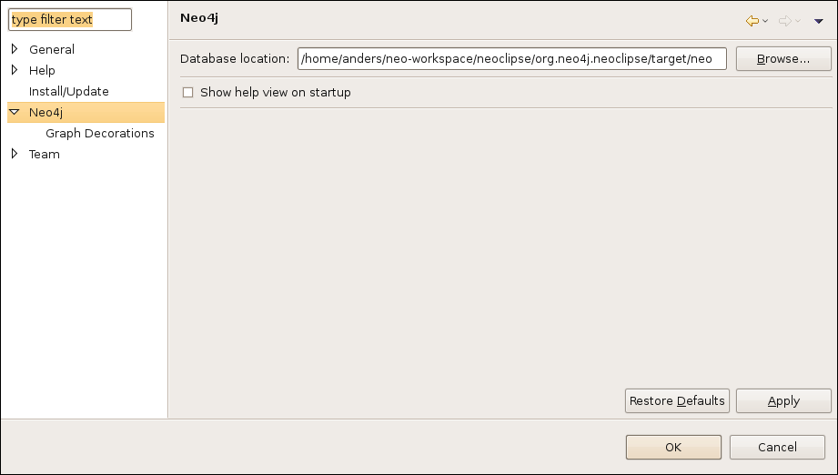

Preferences
The Neoclipse preference settings are found by selecting Window
> Preferences from the main menu and then selecting the Neo4j
preference page if you use the Neoclipse plug-in. If you run the standalone version,
simply hit the Preferences ( ) button
) button
Neo4j preferences
See explanations below the image!
Neo4j database location
In this field you enter the location of a Neo4j database, to open it with the bundled Neo4j database engine.
Show help view on startup
When this option is checked, the help view will show up when the Neoclipse application is started. It has no effect in the plug-in version.
Graph Decoration
See explanations below the image!

Node label properties
This setting provides a way to automatically add node labels to the nodes in the graph.
The format used is a comma-separated list of property keys that will be evaluated from left to right. The the first non-empty property value is used.
This feature can be toggled on/off from the View menu of the Neo4j Graph view ("Node names" switch).
Relationship label properties
Similar to the Node label properties, but for relationships. Can be toggled from the View menu as well ("Relationship names" switch).
Node icon location
This setting makes it possible to add icons to nodes in the graph view. You simply set the location to where the icons are located.
The filenames of the icons should correspond to the settings for Node icon filename properties (below).
Node icon filename properties
This setting is used in conjunction with the Node icon location (above).
The format used here is the same as for the Node label properties, with the difference that in this case, the property value is used to construct an icon filename, not a label. When a property value does not match an icon file, the search continues with the rest of the comma-separated list of property names.
Note: file extensions are added to the property values by Neoclipse!
Currently PNG, GIF, ICO, BMP, JPEG and TIFF image formats are supported.